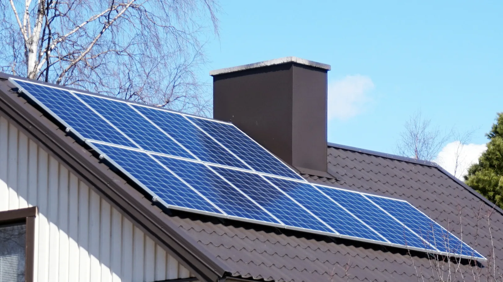

Puolijohteet, diodi, LED ja aurinkokenno
Miksi LED syttyy vain toisin päin kytkettynä, ja miksi LEDin virtaa pitää rajoittaa, vaikka hehkulampun voi kytkeä paristoon suoraan?
Pohjatiedot
- Vastuksen jännite on $U = RI$, ja Ohmin lakia noudattavan vastuksen ominaiskäyrä on suoraluku Resistanssi ja Ohmin laki
- Sarjaankytkennässä sama virta kulkee kaikkien komponenttien läpi, ja lähteen jännite jakautuu niilleluku Kirchhoffin lait ja potentiaali virtapiirissä
- Komponentin teho on $P = UI$luku Sähköteho ja vastuksen lämpeneminen
Ydinpolku: etene vaiheiden mukaan. Ydinpolkuun kuuluvat laskujen lisäksi tutkimukset, selitykset ja kuvaajat. Valinnainen-merkityt tehtävät tarjoavat lisäharjoittelua. Valinnaisia tehtäviä 5.
Pohdinta
Elektroniikkasarjan ohjeessa lukee: ”Kytke LED aina etuvastuksen kanssa ja tarkista, kumpi jalka on pidempi.” Hehkulampun voi kuitenkin kytkeä paristoon suoraan ja kummin päin tahansa. Sama sarja sisältää pienen aurinkopaneelin, jonka kyljessä lukee $6\,\text{V}$ ja $200\,\text{mA}$, mutta paneeli ei anna $1{,}2\,\text{W}$:n tehoa millään kuormalla.
Mitä LED tekee virtapiirissä toisin kuin vastus tai lamppu, ja mikä määrää, kuinka paljon tehoa aurinkopaneelista saadaan?
Valinnainen Kertaa: Ohmin laki
Ennusta
Tee ennusteet ennen tutkimista 2 kysymystä
Ennuste 1: lähteen jännite kaksinkertaiseksi
Ennuste 2: millä kuormalla eniten tehoa?
Tutki
Simulaatio
Käyttöohje
Piiri-valikosta valitaan LED-piiri tai aurinkokenno. LED-piirissä asetetaan lähteen jännite $U$ ja etuvastus $R$ liukusäätimillä sekä komponentti ja kytkentä (päästösuunta tai estosuunta) valikoista. Kytkentäkaaviossa diodin kolmio osoittaa suuntaan, johon virta pääsee kulkemaan, ja LED hehkuu sitä kirkkaammin, mitä suurempi virta on. Kuvaajassa on komponentin ominaiskäyrä, ja violetti piste on toimintapiste. Aurinkokennolle asetetaan irradianssi $G$ ja kuormitusvastus $R$. Kuvaajassa on paneelin $(U, I)$-käyrä, ja oranssin suorakulmion pinta-ala on teho $P = UI$; himmeä käyrä näyttää täyden valon $1000\,\text{W/m}^2$ vertailuksi.
Mallin oletukset
Diodin virta kasvaa päästösuunnassa jännitteen mukana eksponentiaalisesti: virta on $10\,\text{mA}$, kun piidiodin jännite on $0{,}70\,\text{V}$, punaisen LEDin $1{,}90\,\text{V}$ ja sinisen LEDin $2{,}90\,\text{V}$. Estosuunnassa virta on nolla: pieni vuotovirta jätetään huomiotta, eikä estosuunnan läpilyöntiä ole mallinnettu, vaikka todellinen LED kestää estosuunnassa usein vain noin $5\,\text{V}$. LEDien suurin suositeltu virta on $20\,\text{mA}$. Lähde ja johdot ovat ideaaliset. Aurinkopaneelissa on kymmenen piikennoa sarjassa, ja sen pinta-ala on $60\,\text{cm}^2$. Kun $G = 1000\,\text{W/m}^2$, oikosulkuvirta on $200\,\text{mA}$ ja tyhjäkäyntijännite $6{,}0\,\text{V}$. Oikosulkuvirta on suoraan verrannollinen irradianssiin, ja kennojen lämpötila pysyy samana. Luvut ovat mallin laskemia arvoja, eivät mittauksia.
Laskennan selitys
LED-piirissä lähde, vastus ja diodi ovat sarjassa, joten Kirchhoffin jännitelain mukaan $U = U_R + U_\text{D}$ ja Ohmin lain mukaan $U_R = RI$. Diodin virta on
$$I = I_\text{s} \left(e^{U_\text{D}/m} - 1\right)$$
missä $m$ on komponentin vakio ($0{,}040$–$0{,}060\,\text{V}$) ja $I_\text{s}$ hyvin pieni virta, joka on valittu niin, että virta on $10\,\text{mA}$ komponentin kynnysjännitteellä. Toimintapiste on se diodin jännite, jolla $U_\text{D} + RI = U$; ohjelma etsii sen puolitusmenetelmällä. Diodin teho on $P_\text{D} = U_\text{D} I$. Aurinkopaneelin virta on $I = I_\text{L} - I_0 \left(e^{U/m} - 1\right)$, missä $I_\text{L}$ on valon synnyttämä virta, joka on suoraan verrannollinen irradianssiin, ja $m = 0{,}40\,\text{V}$. Kuormalla $R$ toimintapiste on se jännite, jolla tämä virta on $\tfrac{U}{R}$. Teho on $P = UI$.
Valitse LED-piiri tai aurinkokenno. Muuta jännitettä, vastusta, komponenttia ja kytkentäsuuntaa tai valoa ja kuormaa, ja seuraa toimintapistettä kuvaajassa.
Koe 1: lähteen jännite ja LEDin jännite
Testaa ennuste 1. Punainen LED on päästösuunnassa, ja etuvastus on $330\,\Omega$. Muuta vain lähteen jännitettä ja kirjaa LEDin jännite, vastuksen jännite ja virta ainakin kolmella jännitteellä, esimerkiksi $2{,}0$, $3{,}0$, $5{,}0$, $7{,}0$ ja $9{,}0\,\text{V}$. Mikä muuttuu paljon ja mikä vähän?
Alkutila: piiri: LED-piiri, etuvastus = $330\,\Omega$, komponentti: punainen LED, kytkentä: päästösuunta, lähteen jännite = $2\,\text{V}$. Vakiona: piiri, etuvastus, komponentti, kytkentä. Muutetaan: lähteen jännite.
| lähteen jännite | $U_\text{D}$ $(\text{V})$ | $U_\text{R}$ $(\text{V})$ | $I$ $(\text{mA})$ |
|---|
Lisää tutkittavaa 5 tehtävää
Koe 2: päästösuunta ja estosuunta
Lähteen jännite on $5{,}0\,\text{V}$, etuvastus $330\,\Omega$ ja komponenttina punainen LED. Vaihda vain kytkentäsuuntaa ja kirjaa virta, LEDin jännite ja vastuksen jännite kummassakin suunnassa. Missä lähteen jännite on estosuunnassa?
Alkutila: piiri: LED-piiri, lähteen jännite = $5\,\text{V}$, etuvastus = $330\,\Omega$, komponentti: punainen LED, kytkentä: päästösuunta. Vakiona: piiri, lähteen jännite, etuvastus, komponentti. Muutetaan: kytkentä.
| kytkentä | $I$ $(\text{mA})$ | $U_\text{D}$ $(\text{V})$ | $U_\text{R}$ $(\text{V})$ |
|---|
Koe 3: aurinkopaneelin teho kuorman funktiona
Testaa ennuste 2. Piirinä on aurinkokenno, ja irradianssi pysyy $1000\,\text{W/m}^2$:ssa. Muuta vain kuormitusvastusta ja kirjaa jännite, virta ja teho ainakin viidellä vastuksella, esimerkiksi $0$, $10$, $20$, $30$, $50$, $100$ ja $300\,\Omega$. Etsi lopuksi vastus, jolla teho on suurin.
Alkutila: piiri: aurinkokenno, irradianssi = $1000\,\text{W/m}^2$, kuormitusvastus = $0\,\Omega$. Vakiona: piiri, irradianssi. Muutetaan: kuormitusvastus.
| kuormitusvastus | $U$ $(\text{V})$ | $I$ $(\text{mA})$ | $P$ $(\text{W})$ |
|---|
Valinnainen Koe 4: kynnysjännite eri komponenteilla
Lähteen jännite on $5{,}0\,\text{V}$ ja etuvastus $330\,\Omega$, ja kytkentä on päästösuunnassa. Vaihda vain komponenttia ja kirjaa diodin jännite ja virta. Miten komponentit eroavat?
Alkutila: piiri: LED-piiri, lähteen jännite = $5\,\text{V}$, etuvastus = $330\,\Omega$, kytkentä: päästösuunta, komponentti: piidiodi. Vakiona: piiri, lähteen jännite, etuvastus, kytkentä. Muutetaan: komponentti.
| komponentti | $U_\text{D}$ $(\text{V})$ | $I$ $(\text{mA})$ |
|---|
Valinnainen Koe 5: irradianssi
Piirinä on aurinkokenno, ja kuormitusvastus on $50\,\Omega$. Muuta vain irradianssia ja kirjaa oikosulkuvirta ja tyhjäkäyntijännite, jotka näkyvät lukemissa, sekä paneelin teho. Kumpi riippuu valosta enemmän?
Alkutila: piiri: aurinkokenno, kuormitusvastus = $50\,\Omega$, irradianssi = $1000\,\text{W/m}^2$. Vakiona: piiri, kuormitusvastus. Muutetaan: irradianssi.
| irradianssi | $I_\text{k}$ $(\text{mA})$ | $U_\text{t}$ $(\text{V})$ | $P$ $(\text{W})$ |
|---|
Johtopäätös: miten diodi ja aurinkokenno toimivat?
Kirjoita taulukoidesi perusteella: miten LEDin jännite ja virta muuttuivat, kun lähteen jännite kasvoi, ja mitä estosuunnassa tapahtui? Millä kuormitusvastuksella aurinkopaneelin teho oli suurin, ja miksi teho oli pieni sekä hyvin pienellä että hyvin suurella vastuksella?
Mallivastaus
Kokeessa 1 LEDin jännite pysyi lähes samana, noin $1{,}8$–$1{,}9\,\text{V}$, vaikka lähteen jännite kasvoi $2{,}0\,\text{V}$:sta $9{,}0\,\text{V}$:iin. Lähes koko jännitteen lisäys tuli vastuksen yli, ja virta kasvoi alle $1\,\text{mA}$:sta yli $21\,\text{mA}$:iin. LED ei siis noudata Ohmin lakia, ja vastus määrää virran. Kokeessa 2 estosuunnassa virta oli nolla, joten vastuksen jännite oli nolla ja koko lähteen jännite $5{,}0\,\text{V}$ oli LEDin yli. Kokeessa 3 paneelin teho oli nolla oikosulussa, koska jännite oli nolla, ja pieni suurella vastuksella, koska virta oli pieni. Suurin teho, noin $0{,}92\,\text{W}$, saatiin noin $27\,\Omega$:n vastuksella, kun jännite oli noin $5{,}0\,\text{V}$ ja virta noin $184\,\text{mA}$. Arvot ovat mallin laskemia.
Arvioi oma vastauksesi
Rastita kohdat, jotka omassa vastauksessasi jo on.
Kertaa asia teoriasta ja harjoittele tehtävillä.
Teoria
Ydinajatus
Puolijohteet ovat johteiden ja eristeiden välissä
Metallit johtavat sähköä hyvin, ja eristeet, kuten muovi ja lasi, eivät juuri lainkaan. Puolijohde, esimerkiksi pii, on niiden välissä. Sen kykyä johtaa sähköä voidaan muuttaa lisäämällä siihen hyvin pieniä määriä muita aineita, ja se riippuu myös lämpötilasta ja valosta. Puolijohteista valmistetaan elektroniikan komponentit: diodit, LEDit, aurinkokennot sekä puhelinten ja tietokoneiden transistorit. Tässä luvussa puolijohteita tarkastellaan komponentteina: mitä ne tekevät virtapiirissä ja miten niiden jännite ja virta riippuvat toisistaan.
Diodi päästää virran vain yhteen suuntaan
Diodissa on kaksi erilaista puolijohdekerrosta, ja niiden rajapinta päästää virran läpi vain yhteen suuntaan. Diodin piirrosmerkki on kolmio ja poikkiviiva: kolmio osoittaa suuntaan, johon virta pääsee kulkemaan. Kolmion puoleinen napa on anodi ja poikkiviivan puoleinen napa katodi, joka on komponenttiin yleensä merkitty renkaalla.
Kun anodi on kytketty lähteen plusnavan puolelle, diodi on päästösuunnassa, ja virta kulkee. Kun diodi käännetään toisin päin, se on estosuunnassa: virtaa ei käytännössä kulje, ja koko lähteen jännite on diodin yli, kunhan jännite pysyy alle diodin läpilyöntijännitteen. Siksi LED palaa vain oikein päin kytkettynä. Hehkulampun metallilanka johtaa kumpaankin suuntaan, joten lamppu palaa kummin päin tahansa. Lampun langan resistanssi kasvaa sen kuumetessa, joten lamppu rajoittaa itse virtaansa.
Kynnysjännite ja ominaiskäyrä
Diodi ei noudata Ohmin lakia. Päästösuunnassakin virta on lähes nolla, kunnes diodin jännite saavuttaa kynnysjännitteen. Sen jälkeen pieni jännitteen lisäys kasvattaa virtaa paljon. Piidiodin kynnysjännite on noin $0{,}6$–$0{,}7\,\text{V}$.
Diodin ominaiskäyrä piirretään yleensä niin, että jännite $U_\text{D}$ on vaaka-akselilla ja virta $I$ pystyakselilla, toisin päin kuin luvussa Resistanssi ja Ohmin laki. Tällaisesta $(U, I)$-kuvaajasta näkee suoraan, millä jännitteellä virta alkaa kulkea. Kuvaajan negatiivinen jännite tarkoittaa estosuuntaa, ja siellä virta on nolla.
LED muuttaa sähköenergiaa valoksi
LED eli hohtodiodi on diodi, joka lähettää valoa, kun virta kulkee sen läpi päästösuuntaan. Valon väri riippuu LEDin puolijohdemateriaalista, ja väri näkyy myös kynnysjännitteessä. Kun virta on muutamia milliampeereja, punaisen LEDin jännite on noin $1{,}8$–$2{,}0\,\text{V}$, vihreän noin $2{,}2\,\text{V}$ ja sinisen tai valkoisen noin $2{,}9$–$3{,}3\,\text{V}$. LED muuttaa suuremman osan sähköenergiasta valoksi kuin hehkulamppu, jonka sähköenergiasta suurin osa muuttuu langan sisäenergiaksi ja siirtyy lämpönä ympäristöön.
Miksi LED tarvitsee etuvastuksen
Kun LED palaa, sen jännite muuttuu vain vähän, vaikka virta muuttuu paljon. Jos LED kytkettäisiin suoraan $4{,}5\,\text{V}$:n paristoon, LEDin yli olisi lähes koko $4{,}5\,\text{V}$, mikä on selvästi yli sen kynnysjännitteen. Virtaa rajoittaisivat vain pariston sisäinen resistanssi ja johdot, joten virta kasvaisi niin suureksi, että LED kuumenisi ja rikkoutuisi. Siksi LEDin virtaa on rajoitettava sopivalla kytkennällä. Yksinkertaisessa vakiojännitelähteeseen kytkettävässä LED-piirissä tämä tehdään sarjaan kytketyllä etuvastuksella. Vastuksen yli jää se osa lähteen jännitteestä, joka ei ole LEDin yli, ja vastus määrää virran. Muissa LED-laitteissa virtaa voidaan ohjata esimerkiksi vakiovirtalähteellä. Hehkulampun langan resistanssi kasvaa langan kuumetessa, joten lamppu rajoittaa itse virtaansa.
Aurinkokenno on tasajännitelähde
Aurinkokenno on suuri puolijohdekomponentti, joka tuottaa valossa sähkövirtaa. Valo tuo kennoon energiaa, ja kenno erottaa varauksia niin, että sen napojen välille syntyy jännite. Kennolla on plus- ja miinusnapa, ja kuten paristo, se antaa tasavirtaa: virta kulkee ulkoisessa piirissä aina plusnavalta miinusnavalle. Yksi piikenno antaa vain noin $0{,}5$–$0{,}6\,\text{V}$, joten aurinkopaneelissa on monta kennoa sarjassa. Kenno ei varastoi energiaa: pimeässä se ei anna virtaa, joten aurinkovalaisimessa on lisäksi akku.
Kennon $(U, I)$-kuvaaja ei ole laskeva suora kuten pariston (luku Lähdejännite ja sisäinen resistanssi). Kun navat yhdistetään johtimella, kulkee oikosulkuvirta $I_\text{k}$, joka on suoraan verrannollinen kennolle tulevaan säteilytehoon pinta-alayksikköä kohti eli irradianssiin $G$. Kun virtaa ei oteta, napojen välillä on tyhjäkäyntijännite $U_\text{t}$, joka muuttuu valon mukana vain vähän. Niiden välissä virta pysyy aluksi lähes vakiona ja pienenee sitten jyrkästi. Kuvan pienessä paneelissa on kymmenen kennoa sarjassa.

Etuvastus ja aurinkokennon teho
Etuvastuksen mitoitus
Kun lähde, etuvastus ja LED ovat sarjassa, sama virta $I$ kulkee kaikkien läpi. Kirchhoffin jännitelain mukaan lähteen jännite jakautuu vastukselle ja LEDille, $U = U_R + U_\text{D}$ (luku Kirchhoffin lait ja potentiaali virtapiirissä). Vastus noudattaa Ohmin lakia, $U_R = RI$, joten etuvastuksen resistanssi on
$$R = \frac{U - U_\text{D}}{I}$$
missä $R$ on etuvastuksen resistanssi ($\Omega$), $U$ lähteen jännite ($\text{V}$), $U_\text{D}$ LEDin tai diodin jännite ($\text{V}$) ja $I$ virta ($\text{A}$). LEDin jännitteenä käytetään valmistajan ilmoittamaa arvoa, koska se muuttuu virran mukana vain vähän. Kun vastus tunnetaan, samasta yhtälöstä ratkaistaan virta $I = \tfrac{U - U_\text{D}}{R}$.
Komponentin teho on sen jännite kertaa virta (luku Sähköteho ja vastuksen lämpeneminen): LEDin teho on $P_\text{D} = U_\text{D} I$ ja vastuksen teho $P_R = U_R I$. Vastuksessa sähköenergia muuttuu vastuksen sisäenergiaksi, joten vastus valitaan niin, että se kestää tämän tehon. Estosuunnassa $I = 0$, joten $U_R = RI = 0$ ja diodin jännite on koko lähteen jännite $U$.
Aurinkokennon teho
Aurinkokennon tai -paneelin antama sähköteho on
$$P = U I$$
missä $P$ on teho ($\text{W}$), $U$ kennon napojen välinen jännite ($\text{V}$) ja $I$ virta ($\text{A}$). Oikosulussa $U = 0$ ja tyhjäkäynnissä $I = 0$, joten kummassakin teho on nolla. Niiden välissä on maksimitehopiste, käyrän polvi, jossa teho on suurin. $(U, I)$-kuvaajassa teho on origon ja käyrän pisteen väliin jäävän suorakulmion pinta-ala.
Kuvan paneelin suurin teho on noin $0{,}92\,\text{W}$, kun jännite on noin $5{,}0\,\text{V}$ ja virta $184\,\text{mA}$. Kuormitusvastus on silloin $5{,}0\,\text{V} : 0{,}184\,\text{A} \approx 27\,\Omega$. Maksimitehopiste muuttuu irradianssin mukana, joten aurinkovoimaloiden ja latureiden säätöelektroniikka hakee sitä jatkuvasti.
Hyötysuhde
Kennon hyötysuhde on sen antama sähköteho jaettuna kennolle tulevan valon teholla (luku Hyötysuhde). Kennolle tuleva säteilyteho on irradianssi kertaa kennon pinta-ala, ja sähköteho $P$ on kennon teho maksimitehopisteessä, joten
$$\eta = \frac{P}{G A}$$
missä $\eta$ on hyötysuhde, $P$ kennon sähköteho ($\text{W}$), $G$ pinnalle tulevan säteilyn irradianssi eli säteilyteho pinta-alayksikköä kohti ($\text{W/m}^2$) ja $A$ kennon pinta-ala ($\text{m}^2$). Kirkkaana kesäpäivänä, kun aurinko paistaa kohtisuoraan kennoon, $G$ on noin $1000\,\text{W/m}^2$. Kuvan paneelin pinta-ala on $60\,\text{cm}^2 = 0{,}0060\,\text{m}^2$, joten siihen tulee valoa $1000\,\tfrac{\text{W}}{\text{m}^2} \cdot 0{,}0060\,\text{m}^2 = 6{,}0\,\text{W}$, ja hyötysuhde on $0{,}92\,\text{W} : 6{,}0\,\text{W} \approx 15\,\%$. Tavallisten piikennojen hyötysuhde on noin $15$–$22\,\%$.
Yleinen virhekäsitys
Moni laskee etuvastuksen jakamalla lähteen koko jännitteen virralla, $R = \tfrac{U}{I}$. Vastuksen yli on kuitenkin vain se osa jännitteestä, joka ei ole LEDin yli, $U - U_\text{D}$. Liian suuri vastus antaa liian pienen virran, ja LED palaa himmeästi.
Toinen virhe on ajatella, että diodi on vastus, jolla on vakioresistanssi. Diodin jännitteen ja virran suhde $U_\text{D} : I$ muuttuu voimakkaasti virran mukana: kynnysjännitteen alapuolella virtaa ei juuri kulje, ja sen yläpuolella pieni jännitteen lisäys kasvattaa virtaa paljon. Kolmas virhe on laskea aurinkokennon teho oikosulkuvirran ja tyhjäkäyntijännitteen tulona. Ne eivät esiinny yhtä aikaa: oikosulussa jännite on nolla ja tyhjäkäynnissä virta on nolla.
Tiivistelmä
- Puolijohteet, kuten pii, johtavat sähköä huonommin kuin metallit ja paremmin kuin eristeet. Niistä valmistetaan diodit, LEDit ja aurinkokennot.
- Diodi päästää virran vain yhteen suuntaan. Päästösuunnassa anodi on lähteen plusnavan puolella ja virta kulkee, estosuunnassa virtaa ei kulje ja koko lähteen jännite on diodin yli.
- Virta alkaa kulkea, kun diodin jännite saavuttaa kynnysjännitteen: piidiodilla noin $0{,}6$–$0{,}7\,\text{V}$, LEDeillä värin mukaan noin $1{,}8$–$3{,}3\,\text{V}$. Diodi ei noudata Ohmin lakia.
- LEDin virtaa on rajoitettava. Yksinkertaisessa vakiojännitelähteeseen kytketyssä piirissä LEDin kanssa kytketään sarjaan etuvastus: $R = \tfrac{U - U_\text{D}}{I}$. LED-laitteissa virtaa voi ohjata myös vakiovirtalähde.
- Aurinkokenno on tasajännitelähde. Oikosulkuvirta on suoraan verrannollinen irradianssiin, tyhjäkäyntijännite muuttuu vain vähän. Teho $P = UI$ on suurin maksimitehopisteessä, ja hyötysuhde on $\eta = \tfrac{P}{GA}$.
Valinnainen Palaa ennusteisiisi
Vertaa ennusteitasi kokeiden mallin arvoihin ja kaavaan $R = \tfrac{U - U_\text{D}}{I}$. Palaa sitten alun kysymykseen: miksi LED syttyy vain toisin päin kytkettynä, miksi sen virtaa pitää rajoittaa, ja miten etuvastus sen tekee?
Muuttaisitko ennustettasi?
Esimerkit
Kun olet opiskellut luvun teorian, siirry ohjattuihin esimerkkeihin. Ensimmäisessä seuraat mallilaskua vaihe vaiheelta, seuraavissa teet valinnat itse, ja vihjeet auttavat, jos jäät jumiin.
Esimerkki 1: LEDin etuvastus
Polkupyörän takavalon punaista LEDiä käytetään $6{,}0\,\text{V}$:n paristolla. LEDin jännite on $2{,}0\,\text{V}$, kun sen virta on $20\,\text{mA}$. Kuinka suuri etuvastus tarvitaan, ja kuinka suuri teho muuttuu vastuksessa sen sisäenergiaksi?
Vaihe 1/7
Tunnetut ja kysytty. Lähteen jännite $U = 6{,}0\,\text{V}$, LEDin jännite $U_\text{D} = 2{,}0\,\text{V}$ ja virta $I = 20\,\text{mA}$. Kysytään etuvastuksen resistanssia $R$ ja vastuksen tehoa $P_R$.
Vaihe 2/7
Periaate. Paristo, vastus ja LED ovat sarjassa, joten sama virta kulkee kaikkien läpi. Pariston jännite jakautuu vastukselle ja LEDille, $U = U_R + U_\text{D}$, ja vastuksen jännite on $U_R = RI$. Vastuksen teho on sen jännite kertaa virta.
Vaihe 3/7
Kaava ratkaistuna. $$\begin{aligned} R &= \frac{U - U_\text{D}}{I} \\ P_R &= (U - U_\text{D}) I \end{aligned}$$
Vaihe 4/7
Yksikkömuunnokset. Virta ampeereina:
Vaihe 5/7
Sijoitus. $$\begin{aligned} R &= \frac{U - U_\text{D}}{I} \\ \phantom{R} &= \frac{6{,}0\,\text{V} - 2{,}0\,\text{V}}{0{,}020\,\text{A}} \\ \phantom{R} &= 200\,\Omega \\ P_R &= 4{,}0\,\text{V} \cdot 0{,}020\,\text{A} \\ \phantom{P_R} &= 0{,}080\,\text{W} \end{aligned}$$
Vaihe 6/7
Tulos. Etuvastuksen resistanssi on $200\,\Omega$, ja vastuksessa sisäenergiaksi muuttuva teho on $0{,}080\,\text{W}$, kaksi merkitsevää numeroa kuten jännitteissä ja virrassa.
Vaihe 7/7
Järkevyys. LEDin teho on $2{,}0\,\text{V} \cdot 0{,}020\,\text{A} = 0{,}040\,\text{W}$, ja yhteensä $0{,}080\,\text{W} + 0{,}040\,\text{W} = 0{,}12\,\text{W}$ on sama kuin pariston teho $6{,}0\,\text{V} \cdot 0{,}020\,\text{A}$. Jos kaupassa on vain $220\,\Omega$:n vastuksia, virta on $4{,}0\,\text{V} : 220\,\Omega \approx 18\,\text{mA}$, hieman pienempi, joten LED ei ylikuormitu.
Esimerkki 2: Etsi virhe
Esimerkki 3: Sovella uuteen tilanteeseen
Mökin aurinkopaneeli antaa suurimman tehonsa, kun sen jännite on $18{,}0\,\text{V}$ ja virta $5{,}50\,\text{A}$. Paneeli kytketään suoraan $12\,\text{V}$:n akkuun ilman säätöelektroniikkaa, ja akku pitää paneelin jännitteen $12{,}8\,\text{V}$:ssa. Silloin paneelin virta on $5{,}80\,\text{A}$.
Kuinka paljon pienempi paneelin teho on akkuun kytkettynä kuin maksimitehopisteessä?
Vihje 1: ohjaava kysymys
Paneelin teho on sen jännite kertaa virta. Laske teho erikseen kummassakin toimintapisteessä.
Vihje 2: mikä yhteys
Maksimitehopisteessä $P_1 = 18{,}0\,\text{V} \cdot 5{,}50\,\text{A}$ ja akkuun kytkettynä $P_2 = 12{,}8\,\text{V} \cdot 5{,}80\,\text{A}$.
Vihje 3: välivaihe
$P_1 = 99{,}0\,\text{W}$ ja $P_2 = 74{,}24\,\text{W}$. Kysytty on niiden erotus.
Näytä ratkaisu
Annettu
maksimitehopisteessä $U_1 = 18{,}0\,\text{V}$ ja $I_1 = 5{,}50\,\text{A}$, akkuun kytkettynä $U_2 = 12{,}8\,\text{V}$ ja $I_2 = 5{,}80\,\text{A}$
Kysytty
tehon pieneneminen $\Delta P$ watteina
Periaate
Aurinkopaneeli on tasajännitelähde, ja sen teho on jännite kertaa virta. Akku määrää paneelin jännitteen, joten paneeli toimii $(U, I)$-käyränsä toisessa pisteessä kuin maksimitehopisteessä. Virta on siellä hieman suurempi, mutta jännite paljon pienempi.
Kaava
$P_1 = U_1 I_1$ ja $P_2 = U_2 I_2$, josta $\Delta P = U_1 I_1 - U_2 I_2$
Muunnokset
Ei tarvita: jännitteet ovat voltteina ja virrat ampeereina, ja $\text{V} \cdot \text{A} = \text{W}$.
Sijoitus
Vastaus
$24{,}8\,\text{W}$
Kolme merkitsevää numeroa, koska annetut jännitteet ja virrat ovat kolmen merkitsevän numeron arvoja ja erotuksen tarkkuus on kymmenesosawattia.
Järkevyys
Akkuun kytkettynä paneeli antaa noin $74\,\text{W} : 99\,\text{W} \approx 75\,\%$ suurimmasta tehostaan, eli neljäsosa menetetään. Virta kasvoi vain noin $5\,\%$, mutta jännite pieneni noin $30\,\%$. Siksi aurinkolatureissa on maksimitehopistettä hakeva säädin.
Tehtävät
Taso 1 · perusharjoitus 8 tehtävää
Yksi kaava tai yksi päättelyaskel. Ydintehtävät ensin, loput lisäharjoitusta.
- Tehtävä 14-1
Punaisen LEDin jännite on $2{,}0\,\text{V}$, ja sen läpi kulkee $15\,\text{mA}$:n virta. Kuinka suuri on LEDin teho? Vastaa milliwatteina.
Vastaus
$30\,\text{mW}$
Näytä ratkaisu
Annettu
LEDin jännite $U_\text{D} = 2{,}0\,\text{V}$, virta $I = 15\,\text{mA}$
Kysytty
LEDin teho $P_\text{D}$ milliwatteina
Periaate
Komponentin sähköteho on sen jännite kertaa sen läpi kulkeva virta. Tämä pätee myös LEDille, vaikka se ei noudata Ohmin lakia, koska teho on aina energia, jonka varaus luovuttaa komponentissa aikayksikössä.
Kaava
$P_\text{D} = U_\text{D} I$
Muunnokset
$I$$= 15\,\text{mA}$$= 15 \cdot 10^{-3}\,\text{A}$$= 0{,}015\,\text{A}$Sijoitus
$P_\text{D}$$= 2{,}0\,\text{V} \cdot 0{,}015\,\text{A}$$= 0{,}030\,\text{W}$$= 30\,\text{mW}$Vastaus
$30\,\text{mW}$
Kaksi merkitsevää numeroa kuten jännitteessä ja virrassa.
Järkevyys
Yksikkö täsmää: $\text{V} \cdot \text{mA} = \text{mW}$, ja $2 \cdot 15 = 30$. Merkkivalon LEDin teho on kymmeniä milliwatteja, paljon pienempi kuin hehkulampun, kuten kokemuksesta tiedetään.
- Tehtävä 14-2Ydintehtävä
Valkoinen LED kytketään $5{,}0\,\text{V}$:n USB-virtalähteeseen etuvastuksen kautta. LEDin jännite on $3{,}1\,\text{V}$, ja sen virraksi halutaan $20\,\text{mA}$. Kuinka suuri etuvastus tarvitaan? Vastaa ohmeina.
Vastaus
$95\,\Omega$
Näytä ratkaisu
Annettu
lähteen jännite $U = 5{,}0\,\text{V}$, LEDin jännite $U_\text{D} = 3{,}1\,\text{V}$, virta $I = 20\,\text{mA}$
Kysytty
etuvastuksen resistanssi $R$ ohmeina
Periaate
Lähde, vastus ja LED ovat sarjassa, joten sama virta kulkee kaikkien läpi. Kirchhoffin jännitelain mukaan lähteen jännite jakautuu: $U = U_R + U_\text{D}$. Vastus noudattaa Ohmin lakia, $U_R = RI$.
Kaava
$U = RI + U_\text{D}$, josta $R = \dfrac{U - U_\text{D}}{I}$
Muunnokset
$I$$= 20\,\text{mA}$$= 20 \cdot 10^{-3}\,\text{A}$$= 0{,}020\,\text{A}$Sijoitus
$R$$= \dfrac{5{,}0\,\text{V} - 3{,}1\,\text{V}}{0{,}020\,\text{A}}$$= \dfrac{1{,}9\,\text{V}}{0{,}020\,\text{A}}$$= 95\,\Omega$Vastaus
$95\,\Omega$
Kaksi merkitsevää numeroa kuten jännitteiden erotuksessa $1{,}9\,\text{V}$ ja virrassa.
Järkevyys
Tarkistus: $95\,\Omega \cdot 0{,}020\,\text{A} = 1{,}9\,\text{V}$, ja $1{,}9\,\text{V} + 3{,}1\,\text{V} = 5{,}0\,\text{V}$. Valkoisen LEDin jännite on suuri, joten vastukselle jää vain vähän jännitettä ja vastus on pieni.
- Tehtävä 14-3
Piidiodi on kytketty päästösuuntaan $9{,}0\,\text{V}$:n paristoon $1{,}0\,\text{k}\Omega$:n vastuksen kautta. Diodin jännite on $0{,}70\,\text{V}$. Kuinka suuri virta piirissä kulkee? Vastaa milliampeereina.
Vastaus
$8{,}3\,\text{mA}$
Näytä ratkaisu
Annettu
pariston jännite $U = 9{,}0\,\text{V}$, vastus $R = 1{,}0\,\text{k}\Omega$, diodin jännite $U_\text{D} = 0{,}70\,\text{V}$, diodi päästösuunnassa
Kysytty
virta $I$ milliampeereina
Periaate
Diodi on päästösuunnassa, joten virta kulkee, ja diodin jännite on tehtävässä annettu $0{,}70\,\text{V}$. Paristo, vastus ja diodi ovat sarjassa: pariston jännite jakautuu vastukselle ja diodille, ja vastuksen jännite on $U_R = RI$.
Kaava
$U = RI + U_\text{D}$, josta $I = \dfrac{U - U_\text{D}}{R}$
Muunnokset
$R$$= 1{,}0\,\text{k}\Omega$$= 1{,}0 \cdot 1000\,\Omega$$= 1000\,\Omega$Sijoitus
$I$$= \dfrac{9{,}0\,\text{V} - 0{,}70\,\text{V}}{1000\,\Omega}$$= \dfrac{8{,}3\,\text{V}}{1000\,\Omega}$$= 0{,}0083\,\text{A}$$= 8{,}3\,\text{mA}$Vastaus
$8{,}3\,\text{mA}$
Kaksi merkitsevää numeroa kuten jännitteessä $9{,}0\,\text{V}$ ja resistanssissa $1{,}0\,\text{k}\Omega$.
Järkevyys
Ilman diodia virta olisi $9{,}0\,\text{V} : 1000\,\Omega = 9{,}0\,\text{mA}$. Diodi vie vain vähän jännitettä, joten virta on hieman pienempi, kuten pitääkin.
- Tehtävä 14-4
Mökin aurinkopaneeli lataa akkua. Paneelin jännite on $17{,}5\,\text{V}$, ja sen antama virta on $5{,}40\,\text{A}$. Kuinka suuri on paneelin teho?
Vastaus
$94{,}5\,\text{W}$
Näytä ratkaisu
Annettu
paneelin jännite $U = 17{,}5\,\text{V}$, virta $I = 5{,}40\,\text{A}$
Kysytty
paneelin teho $P$ watteina
Periaate
Aurinkopaneeli on tasajännitelähde. Sen antama sähköteho on napojen välinen jännite kertaa virta, kuten minkä tahansa lähteen teho.
Kaava
$P = UI$
Muunnokset
Ei tarvita: jännite on voltteina ja virta ampeereina, ja $\text{V} \cdot \text{A} = \text{W}$.
Sijoitus
$P$$= 17{,}5\,\text{V} \cdot 5{,}40\,\text{A}$$= 94{,}5\,\text{W}$Vastaus
$94{,}5\,\text{W}$
Kolme merkitsevää numeroa kuten jännitteessä ja virrassa.
Järkevyys
Arvio $18\,\text{V} \cdot 5\,\text{A} = 90\,\text{W}$ on lähellä tulosta. Noin $100\,\text{W}$:n paneeli on tavallinen mökin aurinkopaneeli.
- Tehtävä 14-5
Kuvaajassa on vihreän LEDin ominaiskäyrä. Lue kuvaajasta LEDin jännite, kun sen virta on $10\,\text{mA}$, ja laske LEDin teho tällä virralla. Vastaa milliwatteina.
Vastaus
$22\,\text{mW}$
Näytä ratkaisu
Annettu
vihreän LEDin ominaiskäyrä, virta $I = 10\,\text{mA}$
Kysytty
LEDin teho $P_\text{D}$ milliwatteina
Periaate
Ominaiskäyrä kertoo, mikä jännite LEDin yli on kullakin virralla. Teho on jännite kertaa virta, joten tarvitaan virtaa $10\,\text{mA}$ vastaava jännite.
Kuvaajan lukeminen
Kuljetaan pystyakselin kohdasta $10\,\text{mA}$ vaakasuoraan käyrälle. Käyrä leikkaa $10\,\text{mA}$:n ruudukkoviivan pystysuoralla ruudukkoviivalla, joka on $2{,}0\,\text{V}$:n kohdasta yhden $0{,}2\,\text{V}$:n ruudun oikealla, joten $U_\text{D} = 2{,}2\,\text{V}$.
Kaava
$P_\text{D} = U_\text{D} I$
Muunnokset
$I = 10\,\text{mA} = 0{,}010\,\text{A}$
Sijoitus
$P_\text{D}$$= 2{,}2\,\text{V} \cdot 0{,}010\,\text{A}$$= 0{,}022\,\text{W}$$= 22\,\text{mW}$Vastaus
$22\,\text{mW}$
Kaksi merkitsevää numeroa, koska jännite luetaan $0{,}2\,\text{V}$:n ruudukosta ja virta $5\,\text{mA}$:n ruudukosta.
Järkevyys
Vihreän LEDin jännite $2{,}2\,\text{V}$ on punaisen ($1{,}8$–$2{,}0\,\text{V}$) ja sinisen (noin $3\,\text{V}$) välissä, kuten luvun tekstissä. Teho on muutamia kymmeniä milliwatteja, tavallinen merkkivalolle.
- Tehtävä 14-6Ydintehtävä
Pariston jännite on $9{,}0\,\text{V}$. Pariston plusnapa on kytketty diodin kautta vastukseen, ja vastus on kytketty pariston miinusnapaan. Diodin symbolin kolmio osoittaa kohti vastusta.
Mitä piirissä tapahtuu?
Vastaus
Diodi on päästösuunnassa, joten virta kulkee ja diodin yli on vain pieni jännite.
Näytä ratkaisu
Kysytty
mitä piirissä tapahtuu, kun pariston jännite on $9{,}0\,\text{V}$ ja diodin symbolin kolmio osoittaa kohti vastusta, joka on kytketty miinusnapaan
Periaate
Virran suunnaksi sovitaan plusnavasta miinusnapaan. Diodi päästää virran läpi, kun virran suunta on sama kuin symbolin kolmion osoittama suunta (päästösuunta), ja estää sen vastakkaiseen suuntaan (estosuunta). Päästösuunnassa diodin jännite on pieni, ja loput pariston jännitteestä jää sarjassa olevalle vastukselle Kirchhoffin jännitelain mukaan.
Mallivastaus
Kolmio osoittaa kohti miinusnapaa eli virran kulkusuuntaan, joten diodi on päästösuunnassa. Virta kulkee piirissä, ja diodin yli on vain pieni jännite (korkeintaan noin $1\,\text{V}$), koska vastus ottaa suurimman osan pariston $9{,}0\,\text{V}$:n jännitteestä. Muut vaihtoehdot ovat vääriä: ne joko pitävät diodia estosuunnassa tai antavat päästösuunnassa olevalle diodille koko pariston jännitteen.
- Tehtävä 14-7
LED kytketään paristoon, jonka jännite on suurempi kuin LEDin oma jännite. LEDin kanssa sarjaan kytketään etuvastus.
Miksi etuvastus tarvitaan?
Vastaus
LEDin virta kasvaa jyrkästi jännitteen kasvaessa, joten vastus ottaa ylimääräisen jännitteen.
Näytä ratkaisu
Kysytty
miksi LEDin kanssa sarjaan tarvitaan etuvastus
Periaate
LEDin jännite pysyy päästösuunnassa lähes samana, vaikka virta muuttuu paljon: ominaiskäyrä nousee jyrkästi. Jos LED kytketään suoraan pariston napoihin, ylimääräiselle jännitteelle ei ole paikkaa muualla, ja virta kasvaa niin suureksi, että LED palaa loppuun. Sarjaan kytketty vastus ottaa Kirchhoffin jännitelain mukaan osan jännitteestä ($U = U_R + U_\text{D}$), ja Ohmin lain mukaan sen jännite määrää virran: $I = U_R : R$.
Mallivastaus
Etuvastus tarvitaan, koska LEDin virta kasvaa jyrkästi, kun LEDin jännite kasvaa vähänkin. Vastus ottaa pariston ylimääräisen jännitteen itselleen ja pitää virran sopivana. Väärät vaihtoehdot ovat virheellisiä: vastus ei lisää virtaa, ei muuta jännitteen lajia eikä estä virtaa väärään suuntaan.
- Tehtävä 14-8
Laskimen aurinkokennon pinta-ala on $12\,\text{cm}^2$. Kirkkaassa auringonvalossa irradianssi kennolla on $1000\,\text{W/m}^2$. Tällöin kennon jännite on $2{,}0\,\text{V}$ ja virta $100\,\text{mA}$. Mikä on kennon hyötysuhde? Vastaa prosentteina.
Vastaus
$17\,\%$
Näytä ratkaisu
Annettu
pinta-ala $A = 12\,\text{cm}^2$, irradianssi $G = 1000\,\text{W/m}^2$, jännite $U = 2{,}0\,\text{V}$, virta $I = 100\,\text{mA}$
Kysytty
hyötysuhde $\eta$ prosentteina
Periaate
Hyötysuhde on kennon sähköteho jaettuna kennolle tulevan valon teholla. Sähköteho on jännite kertaa virta, ja valon teho on irradianssi kertaa pinta-ala.
Kaava
$P = UI$ ja $\eta = \dfrac{P}{GA}$
Muunnokset
$A$$= 12\,\text{cm}^2$$= 12 \cdot 10^{-4}\,\text{m}^2$$= 0{,}0012\,\text{m}^2$$I$$= 100\,\text{mA}$$= 0{,}100\,\text{A}$Sijoitus
$P$$= 2{,}0\,\text{V} \cdot 0{,}100\,\text{A}$$= 0{,}20\,\text{W}$$\eta$$= \dfrac{0{,}20\,\text{W}}{1000\,\tfrac{\text{W}}{\text{m}^2} \cdot 0{,}0012\,\text{m}^2}$$= \dfrac{0{,}20\,\text{W}}{1{,}2\,\text{W}}$$= 0{,}167$$= 16{,}7\,\%$Vastaus
$17\,\%$
Kaksi merkitsevää numeroa kuten jännitteessä ja pinta-alassa.
Järkevyys
Kennolle tulee valoa $1{,}2\,\text{W}$, ja siitä noin kuudesosa, $0{,}20\,\text{W}$, muuttuu sähköksi: $1{,}2\,\text{W} : 6 = 0{,}20\,\text{W}$. Hyötysuhde on tavallisten piikennojen alueella $15$–$22\,\%$.
Taso 2 · soveltava harjoitus 8 tehtävää
Kaksi vaihetta, mittausaineiston käsittely, yksikkömuunnos tai kaavan ratkaiseminen. Ydintehtävät ensin, loput lisäharjoitusta.
- Tehtävä 14-9
Opiskelija kytkee punaisen LEDin ja $470\,\Omega$:n etuvastuksen sarjaan $9{,}0\,\text{V}$:n paristoon, mutta LED on vahingossa estosuunnassa. Oleta, ettei LEDin läpi kulje estosuunnassa virtaa.
Kuinka suuri jännite on LEDin yli? Vastaa voltteina.
Vastaus
$9{,}0\,\text{V}$
Näytä ratkaisu
Annettu
pariston jännite $U = 9{,}0\,\text{V}$, etuvastus $R = 470\,\Omega$, LED estosuunnassa; oletus: estosuunnassa virtaa ei kulje
Kysytty
LEDin jännite $U_\text{D}$ voltteina
Periaate
Estosuunnassa diodin läpi ei käytännössä kulje virtaa. Koska LED ja vastus ovat sarjassa, myös vastuksen virta on nolla, joten Ohmin lain mukaan vastuksen jännite on nolla. Kirchhoffin jännitelain mukaan koko pariston jännite on silloin LEDin yli.
Kaava
$U = U_R + U_\text{D}$ ja $U_R = RI$, josta virralla $I = 0$ saadaan $U_\text{D} = U - RI = U$
Muunnokset
Ei tarvita: virta on nolla, joten vastuksen arvoa ei tarvitse muuntaa.
Sijoitus
$U_\text{D}$$= 9{,}0\,\text{V} - 470\,\Omega \cdot 0\,\text{A}$$= 9{,}0\,\text{V}$Vastaus
$9{,}0\,\text{V}$
Kaksi merkitsevää numeroa kuten pariston jännitteessä.
Järkevyys
Etuvastus ei suojaa estosuunnassa olevaa LEDiä, koska vastuksen yli ei ole jännitettä. Tavallinen LED kestää estosuunnassa usein vain noin $5\,\text{V}$, joten $9{,}0\,\text{V}$ voi rikkoa sen; siksi napaisuus tarkistetaan ennen kytkemistä.
- Tehtävä 14-10
Kaksi punaista LEDiä ja etuvastus kytketään sarjaan $9{,}0\,\text{V}$:n paristoon. Kummankin LEDin jännite on $2{,}0\,\text{V}$, ja virraksi halutaan $20\,\text{mA}$. Kuinka suuri etuvastus tarvitaan? Vastaa ohmeina.
Vastaus
$250\,\Omega$
Näytä ratkaisu
Annettu
pariston jännite $U = 9{,}0\,\text{V}$, kaksi LEDiä sarjassa, kummankin jännite $U_\text{D} = 2{,}0\,\text{V}$, virta $I = 20\,\text{mA}$
Kysytty
etuvastuksen resistanssi $R$ ohmeina
Periaate
Kaikki komponentit ovat sarjassa, joten sama virta kulkee niiden läpi. Pariston jännite jakautuu vastukselle ja molemmille LEDeille: $U = U_R + 2U_\text{D}$. Vastuksen jännite on $U_R = RI$.
Kaava
$U = RI + 2U_\text{D}$, josta $R = \dfrac{U - 2U_\text{D}}{I}$
Muunnokset
$I = 20\,\text{mA} = 0{,}020\,\text{A}$
Sijoitus
$R$$= \dfrac{9{,}0\,\text{V} - 2 \cdot 2{,}0\,\text{V}}{0{,}020\,\text{A}}$$= \dfrac{5{,}0\,\text{V}}{0{,}020\,\text{A}}$$= 250\,\Omega$Vastaus
$250\,\Omega$
Kaksi merkitsevää numeroa kuten jännitteissä ja virrassa.
Järkevyys
Yhdelle LEDille vastus olisi $7{,}0\,\text{V} : 0{,}020\,\text{A} = 350\,\Omega$. Toinen LED vie $2{,}0\,\text{V}$ lisää, joten vastukselle jää vähemmän jännitettä ja vastus on pienempi.
- Tehtävä 14-11Ydintehtävä
Omakotitalon katolla olevan aurinkopaneelin pinta-ala on $1{,}6\,\text{m}^2$. Kun irradianssi on $800\,\text{W/m}^2$, paneeli antaa sähkötehon $260\,\text{W}$. Mikä on paneelin hyötysuhde? Vastaa prosentteina.
Vastaus
$20\,\%$
Näytä ratkaisu
Annettu
pinta-ala $A = 1{,}6\,\text{m}^2$, irradianssi $G = 800\,\text{W/m}^2$, sähköteho $P = 260\,\text{W}$
Kysytty
hyötysuhde $\eta$ prosentteina
Periaate
Hyötysuhde on hyödyllinen teho jaettuna otetulla teholla. Paneeli ottaa vastaan valon tehon, joka on irradianssi kertaa pinta-ala, ja hyödyllinen teho on paneelin antama sähköteho.
Kaava
$\eta = \dfrac{P}{GA}$
Muunnokset
Ei tarvita: $\tfrac{\text{W}}{\text{m}^2} \cdot \text{m}^2 = \text{W}$. Lopuksi suhdeluku muutetaan prosenteiksi kertomalla sadalla.
Sijoitus
$\eta$$= \dfrac{260\,\text{W}}{800\,\tfrac{\text{W}}{\text{m}^2} \cdot 1{,}6\,\text{m}^2}$$= \dfrac{260\,\text{W}}{1280\,\text{W}}$$= 0{,}203$$= 20{,}3\,\%$Vastaus
$20\,\%$
Kaksi merkitsevää numeroa kuten pinta-alassa $1{,}6\,\text{m}^2$.
Järkevyys
Paneeliin tulee valoa noin $1300\,\text{W}$, ja siitä noin viidesosa muuttuu sähköksi. Hyötysuhde on tavallisten piikennojen alueella $15$–$22\,\%$.
- Tehtävä 14-12
Pihavalaisimen aurinkokenno lataa valaisimen akkua päivän aikana. Kennon teho on keskimäärin $0{,}35\,\text{W}$, ja se lataa akkua $6{,}0\,\text{h}$. Kuinka paljon sähköenergiaa kenno tuottaa tänä aikana? Vastaa kilojouleina.
Vastaus
$7{,}6\,\text{kJ}$
Näytä ratkaisu
Annettu
kennon teho $P = 0{,}35\,\text{W}$, aika $t = 6{,}0\,\text{h}$
Kysytty
sähköenergia $E$ kilojouleina
Periaate
Teho on energia aikayksikköä kohti. Kun teho oletetaan koko ajan keskimääräiseksi tehoksi, energia on teho kertaa aika.
Kaava
$P = \dfrac{E}{t}$, josta $E = Pt$
Muunnokset
$t$$= 6{,}0\,\text{h}$$= 6{,}0 \cdot 3600\,\text{s}$$= 21\,600\,\text{s}$Sijoitus
$E$$= 0{,}35\,\text{W} \cdot 21\,600\,\text{s}$$= 7560\,\text{J}$$= 7{,}56\,\text{kJ}$Vastaus
$7{,}6\,\text{kJ}$
Kaksi merkitsevää numeroa kuten tehossa ja ajassa.
Järkevyys
Wattitunteina energia on $0{,}35\,\text{W} \cdot 6{,}0\,\text{h} = 2{,}1\,\text{Wh}$, ja $2{,}1 \cdot 3600\,\text{J} = 7560\,\text{J}$, sama tulos. Määrä on pienen akun luokkaa, mikä riittää yhdelle LEDille koko yöksi.
- Tehtävä 14-13
Taulukossa on kolmen LEDin jännite, kun jokaisen virta on $15\,\text{mA}$ (esimerkkiaineisto). Jokainen LED kytketään erikseen etuvastuksen kautta $5{,}0\,\text{V}$:n jännitelähteeseen, ja virraksi halutaan $15\,\text{mA}$.
a) Mikä LED tarvitsee suurimman etuvastuksen? Perustele.
b) Laske tämän etuvastuksen resistanssi. Vastaa kohdan b tulos ohmeina.
LEDien jännitteet virralla $15\,\text{mA}$ (esimerkkiaineisto) Väri $U_\text{D}\,(\text{V})$ Sininen 3,10 Punainen 1,90 Keltainen 2,10 Vastaus
$210\,\Omega$
Näytä ratkaisu
Annettu
LEDien jännitteet virralla $15\,\text{mA}$: sininen $3{,}10\,\text{V}$, punainen $1{,}90\,\text{V}$, keltainen $2{,}10\,\text{V}$, lähteen jännite $U = 5{,}0\,\text{V}$, virta $I = 15\,\text{mA}$
Kysytty
a) mikä LED tarvitsee suurimman etuvastuksen, b) sen etuvastuksen resistanssi $R$ ohmeina
Periaate
Lähde, vastus ja LED ovat sarjassa, joten sama virta kulkee molempien läpi ja $U = U_R + U_\text{D}$. Vastuksen jännite $U_R = U - U_\text{D}$ on sitä suurempi, mitä pienempi LEDin jännite on. Koska virta on kaikilla sama, Ohmin lain $R = U_R : I$ mukaan suurin vastuksen jännite antaa suurimman resistanssin. Suurin etuvastus tarvitaan siis LEDille, jonka jännite on pienin, eli punaiselle LEDille.
Kaava
$R = \dfrac{U - U_\text{D}}{I}$
Muunnokset
$I = 15\,\text{mA} = 0{,}015\,\text{A}$
Sijoitus
Punaiselle LEDille
$R$$= \dfrac{5{,}0\,\text{V} - 1{,}90\,\text{V}}{0{,}015\,\text{A}}$$= \dfrac{3{,}1\,\text{V}}{0{,}015\,\text{A}}$$= 207\,\Omega$Vastaus
$210\,\Omega$
(punaisen LEDin etuvastus), kaksi merkitsevää numeroa kuten virrassa.
Järkevyys
Tarkistus: $207\,\Omega \cdot 0{,}015\,\text{A} = 3{,}1\,\text{V}$, ja $3{,}1\,\text{V} + 1{,}90\,\text{V} = 5{,}0\,\text{V}$. Muille LEDeille tulee pienemmät vastukset: keltaiselle $2{,}9\,\text{V} : 0{,}015\,\text{A} = 193\,\Omega$ ja siniselle $1{,}9\,\text{V} : 0{,}015\,\text{A} = 127\,\Omega$, joten punainen on suurin.
- Tehtävä 14-14Ydintehtävä
Pienen aurinkokennon jännite ja virta mitattiin eri kuormitusvastuksilla samassa valaistuksessa (esimerkkiaineisto).
Laske kennon teho jokaisella kuormitusvastuksella. Kuinka suuri on kennon suurin mitattu teho? Vastaa milliwatteina.
Aurinkokennon mittaukset eri kuormilla (esimerkkiaineisto) $R\,(\Omega)$ $U\,(\text{V})$ $I\,(\text{mA})$ 10 0,99 99 15 1,48 99 20 1,89 94 22 1,99 91 27 2,12 78 33 2,20 66 47 2,28 48 100 2,34 23 Vastaus
$181\,\text{mW}$
Näytä ratkaisu
Annettu
taulukon mittausparit $(R$; $U$; $I)$ kahdeksalla kuormitusvastuksella
Kysytty
kennon suurin mitattu teho $P$ milliwatteina
Periaate
Aurinkokennon teho on napojen välinen jännite kertaa virta. Teho lasketaan jokaisella kuormalla, ja suurin arvo valitaan. Kuormitusvastus ei vaikuta laskuun, koska sen vaikutus on jo mukana mitatussa jännitteessä ja virrassa.
Kaava
$P = UI$
Muunnokset
Ei tarvita: $\text{V} \cdot \text{mA} = \text{mW}$.
Sijoitus
Tehot ovat $10\,\Omega$: $0{,}99\,\text{V} \cdot 99\,\text{mA} = 98\,\text{mW}$, $15\,\Omega$: $146\,\text{mW}$, $20\,\Omega$: $178\,\text{mW}$, $22\,\Omega$: $1{,}99\,\text{V} \cdot 91\,\text{mA} = 181\,\text{mW}$, $27\,\Omega$: $165\,\text{mW}$, $33\,\Omega$: $145\,\text{mW}$, $47\,\Omega$: $109\,\text{mW}$ ja $100\,\Omega$: $54\,\text{mW}$. Suurin on $22\,\Omega$:n kohdalla.
Vastaus
$181\,\text{mW}$
Kolme merkitsevää numeroa kuten jännitteessä ja virrassa.
Järkevyys
Teho on pieni kuormilla $10\,\Omega$ (jännite pieni) ja $100\,\Omega$ (virta pieni), ja suurin teho on niiden välissä käyrän polvessa. Tarkistus:
$U : I$$= 1{,}99\,\text{V} : 0{,}091\,\text{A}$$= 21{,}9\,\Omega$$\approx 22\,\Omega$joten mittaus täsmää kuormitusvastuksen kanssa.
- Tehtävä 14-15
Opiskelija mitoittaa sinisen LEDin etuvastuksen. Pariston jännite on $9{,}0\,\text{V}$, LEDin jännite $3{,}2\,\text{V}$ ja halutaan virraksi $15\,\text{mA}$.
Opiskelijan ratkaisu: ”Vastuksen yli on pariston jännite, joten $R = U : I = 9{,}0\,\text{V} : 0{,}015\,\text{A} = 600\,\Omega$.”
a) Mikä virhe opiskelijan ratkaisussa on?
b) Laske etuvastus oikein. Vastaa kohdan b tulos ohmeina.
Vastaus
$390\,\Omega$
Näytä ratkaisu
Annettu
pariston jännite $U = 9{,}0\,\text{V}$, LEDin jännite $U_\text{D} = 3{,}2\,\text{V}$, virta $I = 15\,\text{mA}$; opiskelija sai $600\,\Omega$
Kysytty
a) opiskelijan virhe, b) oikea etuvastus $R$ ohmeina
Periaate
Lähde, vastus ja LED ovat sarjassa, joten pariston jännite jakautuu vastukselle ja LEDille: $U = U_R + U_\text{D}$. Ohmin laki $R = U_R : I$ koskee vastuksen omaa jännitettä, ei koko pariston jännitettä. Opiskelija käytti vastuksen jännitteenä koko pariston jännitettä ja unohti LEDin jännitteen. Virhe tekee vastuksesta liian suuren, jolloin virta jäisi tavoitetta pienemmäksi.
Kaava
$R = \dfrac{U - U_\text{D}}{I}$
Muunnokset
$I = 15\,\text{mA} = 0{,}015\,\text{A}$
Sijoitus
$R$$= \dfrac{9{,}0\,\text{V} - 3{,}2\,\text{V}}{0{,}015\,\text{A}}$$= \dfrac{5{,}8\,\text{V}}{0{,}015\,\text{A}}$$= 387\,\Omega$Vastaus
$390\,\Omega$
Kaksi merkitsevää numeroa kuten jännitteissä ja virrassa.
Järkevyys
Tarkistus: $387\,\Omega \cdot 0{,}015\,\text{A} = 5{,}8\,\text{V}$, ja $5{,}8\,\text{V} + 3{,}2\,\text{V} = 9{,}0\,\text{V}$. Opiskelijan $600\,\Omega$ antaisi virraksi vain $5{,}8\,\text{V} : 600\,\Omega = 9{,}7\,\text{mA}$, joten LED olisi himmeämpi kuin haluttiin.
- Tehtävä 14-16
Pariston jännite on $4{,}5\,\text{V}$. Pariston napoihin on kytketty rinnan kolme haaraa.
Haara 1: punainen LED A ja etuvastus sarjassa, LEDin anodi pariston plusnavan puolella.
Haara 2: punainen LED B ja etuvastus sarjassa, LEDin katodi pariston plusnavan puolella.
Haara 3: hehkulamppu C ja piidiodi sarjassa, diodin katodi pariston plusnavan puolella.
Palavan punaisen LEDin jännite on $2{,}0\,\text{V}$, ja lamppu C palaa, kun se kytketään yksin paristoon. Mitkä valot palavat?
Vastaus
Vain LED A
Näytä ratkaisu
Kysytty
mitkä kolmesta valosta palavat ja miksi.
Periaate
Diodi ja LED johtavat vain päästösuunnassa, kun anodi on pariston plusnavan puolella. Estosuunnassa virtaa ei kulje. Rinnan kytketyt haarat ovat kukin pariston koko jännitteessä, joten jokainen haara on oma virtapiirinsä: yhden haaran estosuuntainen diodi katkaisee vain sen haaran virran. Sarjassa olevien komponenttien läpi kulkee sama virta.
Mallivastaus
Vain LED A palaa.
Haara 1: LEDin anodi on plusnavan puolella, joten LED on päästösuunnassa. Haaran jännite $4{,}5\,\text{V}$ on suurempi kuin LEDin jännite $2{,}0\,\text{V}$, ja etuvastuksen yli jää $4{,}5\,\text{V} - 2{,}0\,\text{V} = 2{,}5\,\text{V}$. Virta kulkee, ja LED A palaa.
Haara 2: LEDin katodi on plusnavan puolella, joten LED B on estosuunnassa. Virtaa ei kulje, ja koko $4{,}5\,\text{V}$ on LEDin yli.
Haara 3: piidiodin katodi on plusnavan puolella, joten diodi on estosuunnassa. Lampun lanka johtaisi kumpaankin suuntaan, mutta sarjassa lampun ja diodin läpi kulkee sama virta, ja diodi pysäyttää sen. Lamppu C ei pala.
Perustelu on siis, että diodi johtaa vain anodi plusnavan puolella ja jokainen rinnakkainen haara toimii omana virtapiirinään. Etuvastuksen tarve on tosi asia, mutta se ei kerro virran suunnasta. Jos haarat olisivat sarjassa, yksikin estosuuntainen diodi katkaisisi koko piirin virran, eikä mikään valo palaisi.
Taso 3 · haastava 5 tehtävää
Valinnaisia: soveltamista, kaksi ideaa yhdessä tai uusi tilanne, jossa päättelet itse.
- Tehtävä 14-17
Taskulampussa on punainen LED, jonka jännite on $2{,}0\,\text{V}$, ja $120\,\Omega$:n etuvastus. Uusien paristojen jännite on $4{,}5\,\text{V}$, ja käytössä se laskee $3{,}6\,\text{V}$:iin. Oleta, että LEDin jännite pysyy samana.
Kuinka monta prosenttia LEDin virta pienenee, kun paristojen jännite laskee näin? Vastaa prosentteina.
Vastaus
$36\,\%$
Näytä ratkaisu
Annettu
LEDin jännite $U_\text{D} = 2{,}0\,\text{V}$, etuvastus $R = 120\,\Omega$, paristojen jännite aluksi $U_1 = 4{,}5\,\text{V}$ ja lopuksi $U_2 = 3{,}6\,\text{V}$
Kysytty
virran pieneneminen prosentteina alkuperäisestä virrasta
Periaate
LEDin jännite pysyy oletuksen mukaan samana, joten koko jännitteen muutos kohdistuu vastukseen. Virta saadaan Kirchhoffin jännitelaista ja Ohmin laista. Vastuksen jännite pienenee suhteellisesti enemmän kuin paristojen jännite, koska siitä on vähennetty LEDin vakiojännite.
Kaava
$I = \dfrac{U - U_\text{D}}{R}$, joten $I_1 = \dfrac{U_1 - U_\text{D}}{R}$, $I_2 = \dfrac{U_2 - U_\text{D}}{R}$ ja suhteellinen muutos on $\dfrac{I_1 - I_2}{I_1}$
Muunnokset
Ei tarvita: virrat jaetaan keskenään, joten yksikkö supistuu. Suhdeluku muutetaan prosenteiksi kertomalla sadalla.
Sijoitus
$I_1$$= \dfrac{4{,}5\,\text{V} - 2{,}0\,\text{V}}{120\,\Omega}$$= 0{,}02083\,\text{A}$$I_2$$= \dfrac{3{,}6\,\text{V} - 2{,}0\,\text{V}}{120\,\Omega}$$= 0{,}01333\,\text{A}$$\dfrac{I_1 - I_2}{I_1}$$= \dfrac{0{,}00750\,\text{A}}{0{,}02083\,\text{A}}$$= 0{,}36$Vastaus
$36\,\%$
Kaksi merkitsevää numeroa kuten jännitteissä.
Järkevyys
Paristojen jännite pieneni vain $0{,}9\,\text{V} : 4{,}5\,\text{V} = 20\,\%$, mutta vastuksen jännite pieneni $2{,}5\,\text{V}$:sta $1{,}6\,\text{V}$:iin, eli $36\,\%$. Siksi LED-taskulamppu himmenee selvästi, kun paristot alkavat tyhjentyä.
- Tehtävä 14-18
Aurinkopaneelin jännite ja virta mitattiin eri kuormitusvastuksilla samassa valaistuksessa. Mittausparit $(U;\ I)$ olivat: $(0\,\text{V};\ 3{,}30\,\text{A})$, $(10{,}0\,\text{V};\ 3{,}25\,\text{A})$, $(14{,}0\,\text{V};\ 3{,}18\,\text{A})$, $(16{,}0\,\text{V};\ 3{,}05\,\text{A})$, $(17{,}0\,\text{V};\ 2{,}90\,\text{A})$, $(18{,}0\,\text{V};\ 2{,}55\,\text{A})$, $(19{,}0\,\text{V};\ 1{,}90\,\text{A})$, $(20{,}0\,\text{V};\ 0{,}95\,\text{A})$, $(21{,}0\,\text{V};\ 0\,\text{A})$.
Millä kuormitusvastuksella paneeli antaa mittauksista suurimman tehon? Vastaa ohmeina.
Vastaus
$5{,}9\,\Omega$
Näytä ratkaisu
Annettu
paneelin mittausparit $(U$; $I)$ samassa valaistuksessa (yhdeksän paria tehtävässä)
Kysytty
kuormitusvastus $R$ ohmeina, kun teho on mittauksista suurin
Periaate
Paneelin teho on $P = UI$. Se on nolla oikosulussa ja tyhjäkäynnissä, joten suurin teho on niiden välissä, maksimitehopisteessä. Lasketaan jokaisen mittauksen teho, valitaan suurin, ja kuormitusvastus saadaan Ohmin laista $U = RI$ kuormalle, koska kuorman jännite on paneelin jännite ja sen virta paneelin virta.
Kaava
$P = UI$, ja maksimitehopisteessä $U = RI$, josta $R = \dfrac{U}{I}$
Muunnokset
Ei tarvita: jännitteet ovat voltteina ja virrat ampeereina.
Sijoitus
Tehot ovat $0\,\text{W}$, $32{,}5\,\text{W}$, $44{,}5\,\text{W}$, $48{,}8\,\text{W}$, $49{,}3\,\text{W}$, $45{,}9\,\text{W}$, $36{,}1\,\text{W}$, $19{,}0\,\text{W}$ ja $0\,\text{W}$. Suurin on $17{,}0\,\text{V} \cdot 2{,}90\,\text{A} = 49{,}3\,\text{W}$, joten
$R$$= \dfrac{17{,}0\,\text{V}}{2{,}90\,\text{A}}$$= 5{,}86\,\Omega$Vastaus
$5{,}9\,\Omega$
Kaksi merkitsevää numeroa, koska suurin teho ja viereinen $48{,}8\,\text{W}$ ovat niin lähellä toisiaan, että todellinen maksimitehopiste voi olla mittausten välissä.
Järkevyys
Oikosulussa kuormitusvastus on nolla ja tyhjäkäynnissä hyvin suuri, ja $5{,}9\,\Omega$ on niiden välissä. Suurin teho on käyrän polvessa, jossa virta on jo alkanut pienentyä mutta jännite on lähes suurimmillaan.
- Tehtävä 14-19
LED-nauhassa on rinnan monta samanlaista ryhmää, ja jokaisessa ryhmässä on kolme sarjaan kytkettyä valkoista LEDiä ja etuvastus. Nauha kytketään $12\,\text{V}$:n jännitteeseen. Jokaisen LEDin jännite on $3{,}0\,\text{V}$, ja jokaisen ryhmän virta on $20\,\text{mA}$.
Kuinka monta prosenttia nauhan sähkötehosta muuttuu etuvastusten sisäenergiaksi?
Vastaus
$25\,\%$
Näytä ratkaisu
Annettu
nauhan jännite $U = 12\,\text{V}$, ryhmässä kolme LEDiä sarjassa, jokaisen jännite $U_\text{D} = 3{,}0\,\text{V}$, ryhmän virta $I = 20\,\text{mA}$
Kysytty
etuvastusten osuus nauhan tehosta prosentteina
Periaate
Ryhmät ovat rinnan, joten jokaisen ryhmän yli on $12\,\text{V}$, ja ryhmät ovat samanlaisia, joten riittää tarkastella yhtä ryhmää. Ryhmässä LEDit ja vastus ovat sarjassa, joten sama virta kulkee kaikkien läpi, ja jännite jakautuu: $U = U_R + 3U_\text{D}$. Vastuksen teho on $U_R I$ ja koko ryhmän teho $UI$.
Kaava
$U_R = U - 3U_\text{D}$ ja osuus $\dfrac{U_R I}{UI}$, josta osuus on $\dfrac{U - 3U_\text{D}}{U}$
Muunnokset
Ei tarvita: virta supistuu, ja jännitteiden suhde on suhdeluku. Lopuksi kerrotaan sadalla.
Sijoitus
$\dfrac{12\,\text{V} - 3 \cdot 3{,}0\,\text{V}}{12\,\text{V}}$$= \dfrac{3{,}0\,\text{V}}{12\,\text{V}}$$= 0{,}25$$= 25\,\%$Vastaus
$25\,\%$
Kaksi merkitsevää numeroa kuten LEDin jännitteessä $3{,}0\,\text{V}$.
Järkevyys
Yhden ryhmän teho on $12\,\text{V} \cdot 0{,}020\,\text{A} = 0{,}24\,\text{W}$, ja vastuksen $3{,}0\,\text{V} \cdot 0{,}020\,\text{A} = 0{,}060\,\text{W}$, joka on neljäsosa. Siksi nauhassa on kolme LEDiä sarjassa: yhdellä LEDillä vastukseen muuttuisi $9{,}0\,\text{V} : 12\,\text{V} = 75\,\%$ tehosta.
- Tehtävä 14-20
Omakotitalon katolle suunnitellaan aurinkopaneelisto, jonka yhteenlaskettu pinta-ala on $24\,\text{m}^2$. Paneelien ja vaihtosuuntaajan yhteinen hyötysuhde on $19\,\%$, ja sen oletetaan pysyvän vakiona koko vuoden.
Taulukossa on paneelien pinnalle tuleva auringonsäteilyn energia neliömetriä kohti $H$ ja talon sähkönkulutus $E_\text{kul}$ kuukausittain (esimerkkiaineisto, ei mittaustulos).
a) Laske paneeliston vuosituotanto.
b) Laske omavaraisuusaste eli vuosituotannon osuus talon vuosikulutuksesta. Vastaa prosentteina.
c) Laske kuukausituotanto ja päättele, missä kuukausissa paneelisto tuottaa vähemmän kuin talo kuluttaa. Miksi omavaraisuusaste ei yksin kerro, paljonko talo ostaa verkosta sähköä?
Kohdan b tulos kirjoitetaan vastauslaatikkoon.
Säteilyenergia ja sähkönkulutus kuukausittain (esimerkkiaineisto) Kuukausi $H\,(\text{kWh/m}^2)$ $E_\text{kul}\,(\text{kWh})$ Tammi 12 620 Helmi 32 560 Maalis 80 520 Huhti 120 400 Touko 160 330 Kesä 170 290 Heinä 170 280 Elo 135 300 Syys 85 370 Loka 40 460 Marras 15 560 Joulu 8 650 Vastaus
$88\,\%$
Näytä ratkaisu
Annettu
pinta-ala $A = 24\,\text{m}^2$, hyötysuhde $\eta = 19\,\%$, kuukausittaiset säteilyenergiat $H$ ja kulutukset $E_\text{kul}$ taulukossa
Kysytty
a) vuosituotanto $E$, b) omavaraisuusaste prosentteina, c) kuukaudet, joissa tuotanto on kulutusta pienempi, ja omavaraisuusasteen rajoitus
Periaate
Hyötysuhde on sähköenergia jaettuna paneeleille tulevalla säteilyenergialla. Säteilyenergia on säteilyenergia neliömetriä kohti kertaa pinta-ala, $H A$, joten tuotettu sähköenergia on $E = \eta H A$. Vuosituotanto saadaan laskemalla kuukausien säteilyenergiat yhteen, ja omavaraisuusaste on vuosituotannon ja vuosikulutuksen suhde.
Kaava
$E = \eta A \sum H$ ja omavaraisuusaste $= \dfrac{E}{\sum E_\text{kul}}$
Muunnokset
$\eta = 19\,\% = 0{,}19$. Ei muita: energiat ovat kilowattitunteina.
Sijoitus
a) Säteilyenergioiden summa on $\sum H = 1027\,\text{kWh/m}^2$, joten
$E$$= 0{,}19 \cdot 24\,\text{m}^2 \cdot 1027\,\tfrac{\text{kWh}}{\text{m}^2}$$= 4683\,\text{kWh}$b) Kulutusten summa on $\sum E_\text{kul} = 5340\,\text{kWh}$, joten omavaraisuusaste on
$\dfrac{4683\,\text{kWh}}{5340\,\text{kWh}}$$= 0{,}877$$= 87{,}7\,\%$c) Kuukausituotanto on
$E_\text{kk}$$= 0{,}19 \cdot 24\,\text{m}^2 \cdot H$$= 4{,}56\,\text{m}^2 \cdot H$Se on pienempi kuin kulutus tammi-, helmi- ja maaliskuussa sekä loka-, marras- ja joulukuussa: esimerkiksi tammikuussa
$4{,}56\,\text{m}^2 \cdot 12\,\tfrac{\text{kWh}}{\text{m}^2}$$= 55\,\text{kWh}$kun kulutus on $620\,\text{kWh}$, ja joulukuussa $36\,\text{kWh}$, kun kulutus on $650\,\text{kWh}$. Näiden kuuden kuukauden kulutus on yhteensä $3370\,\text{kWh}$ ja tuotanto yhteensä $853\,\text{kWh}$, joten vajaus on $2517\,\text{kWh}$.
Vastaus
$88\,\%$
Kaksi merkitsevää numeroa kuten hyötysuhteessa $19\,\%$. Vuosituotanto on noin $4700\,\text{kWh}$.
Järkevyys
Tuotanto on noin $4{,}7\,\text{MWh}$, mikä sopii $24\,\text{m}^2$:n paneelistolle Suomessa, ja se on vähän alle talon kulutuksen $5340\,\text{kWh}$, joten omavaraisuusaste on alle $100\,\%$. Omavaraisuusaste on vuosisumma. Kesän ylijäämää ei voi käyttää talvella ilman varastointia, ja talven vajaus $2517\,\text{kWh}$ on $2517 : 5340 = 47\,\%$ vuosikulutuksesta. Verkosta ostetaan siis vähintään tämä osuus, vaikka omavaraisuusaste on $88\,\%$.
- Tehtävä 14-21
Vihreän LEDin ominaiskäyrä mitattiin pisteittäin (esimerkkiaineisto). LED kytketään $4{,}5\,\text{V}$:n paristoon $180\,\Omega$:n etuvastuksen kautta. LEDin suurin sallittu pysyvä virta on $25\,\text{mA}$.
a) Arvioi LEDin kynnysjännite jatkamalla ominaiskäyrän jyrkkää suoraa osaa ($2{,}05$–$2{,}10\,\text{V}$) jänniteakselille.
b) Määritä LEDin työpiste eli virta ja jännite piirissä. Vastaa virta milliampeereina.
c) Kuinka paljon LEDin jännite muuttuu, kun virta kasvaa taulukossa arvosta $9{,}8\,\text{mA}$ arvoon $41\,\text{mA}$? Miksi LEDin jännitteenä voidaan käyttää etuvastusta mitoitettaessa vakioarvoa?
Kohdan b tulos kirjoitetaan vastauslaatikkoon.
Vihreän LEDin ominaiskäyrä (esimerkkiaineisto) $U_\text{D}\,(\text{V})$ $I\,(\text{mA})$ 1,70 0,1 1,80 0,6 1,90 2,4 2,00 9,8 2,05 20 2,10 41 Vastaus
$14\,\text{mA}$
Näytä ratkaisu
Annettu
LEDin ominaiskäyrän mittauspisteet $(U_\text{D}$; $I)$, pariston jännite $U = 4{,}5\,\text{V}$, etuvastus $R = 180\,\Omega$, suurin sallittu virta $25\,\text{mA}$
Kysytty
a) kynnysjännite, b) työpisteen virta milliampeereina, c) LEDin jännitteen muutos virran kasvaessa ja vakiojännitteen perustelu
Periaate
Sarjapiirissä sama virta kulkee vastuksen ja LEDin läpi, ja $U = U_R + U_\text{D}$. Vastuksen kautta tuleva virta on $I = \dfrac{U - U_\text{D}}{R}$ kullakin LEDin jännitteellä, ja LEDin virta saadaan ominaiskäyrästä. Työpiste on se jännite, jolla nämä kaksi virtaa ovat yhtä suuret: kuormasuoran ja ominaiskäyrän leikkauspiste.
Kuvaajan lukeminen
a) Ominaiskäyrän jyrkkä suora osa on taulukon kahden viimeisen pisteen välissä: virta kasvaa $20\,\text{mA}$:sta $41\,\text{mA}$:iin, kun jännite kasvaa $2{,}05\,\text{V}$:sta $2{,}10\,\text{V}$:iin, joten suoran kulmakerroin on
$\dfrac{41\,\text{mA} - 20\,\text{mA}}{2{,}10\,\text{V} - 2{,}05\,\text{V}}$$= 420\,\tfrac{\text{mA}}{\text{V}}$Suora leikkaa jänniteakselin kohdassa
$2{,}05\,\text{V} - \dfrac{20\,\text{mA}}{420\,\text{mA/V}}$$= 2{,}05\,\text{V} - 0{,}048\,\text{V}$$= 2{,}00\,\text{V}$Kynnysjännite on noin $2{,}0\,\text{V}$.
Kaava
$I = \dfrac{U - U_\text{D}}{R}$ vastuksen kautta ja ominaiskäyrän virta taulukosta
Muunnokset
Ei tarvita: jännitteet ovat voltteina ja resistanssi ohmeina, ja tulos $\text{V} : \Omega = \text{A}$ muutetaan milliampeereiksi kertomalla luvulla $1000$.
Sijoitus
Vastuksen kautta tuleva virta on jännitteellä $2{,}00\,\text{V}$
$\dfrac{4{,}5\,\text{V} - 2{,}00\,\text{V}}{180\,\Omega}$$= 13{,}9\,\text{mA}$ja jännitteellä $2{,}05\,\text{V}$
$\dfrac{4{,}5\,\text{V} - 2{,}05\,\text{V}}{180\,\Omega}$$= 13{,}6\,\text{mA}$LEDin virta on näillä jännitteillä $9{,}8\,\text{mA}$ ja $20\,\text{mA}$. Jännitteellä $2{,}00\,\text{V}$ vastuksen kautta tuleva virta on LEDin virtaa suurempi, jännitteellä $2{,}05\,\text{V}$ pienempi, joten leikkaus on välillä. Suorina kuvattuna leikkaus on kohdassa $U_\text{D} \approx 2{,}02\,\text{V}$ ja $I \approx 13{,}8\,\text{mA}$. Tarkistus:
$\dfrac{4{,}5\,\text{V} - 2{,}02\,\text{V}}{180\,\Omega}$$= 13{,}8\,\text{mA}$c) Kun virta kasvaa arvosta $9{,}8\,\text{mA}$ arvoon $41\,\text{mA}$, eli yli nelinkertaiseksi, jännite muuttuu arvosta $2{,}00\,\text{V}$ arvoon $2{,}10\,\text{V}$ eli $0{,}10\,\text{V}$.
Vastaus
$14\,\text{mA}$
Kaksi merkitsevää numeroa, koska taulukon pisteiden väli on karkea ja tulos on luettu kahden pisteen väliltä. Työpisteen jännite on noin $2{,}0\,\text{V}$. Virta on sallittua pienempi kuin $25\,\text{mA}$.
Järkevyys
Virta $13{,}8\,\text{mA}$ on pienempi kuin sallittu $25\,\text{mA}$, joten LED kestää. Jännite $2{,}02\,\text{V}$ on vihreän LEDin tavallisella alueella, ja työpisteen jännite on hieman kynnysjännitettä $2{,}0\,\text{V}$ suurempi, kuten jyrkällä käyrällä kuuluukin. Perustelu c): jännite muuttuu vain $0{,}10\,\text{V}$ eli noin $5\,\%$, vaikka virta kasvaa yli nelinkertaiseksi. Siksi LEDin jännite voidaan pitää vakiona, ja etuvastukselle jää jännite $U - U_\text{D}$, joka määrää virran. Ilman vastusta virta määräytyisi pelkästään jyrkästä käyrästä, ja jo pieni jännitteen kasvu tekisi virrasta suuren.
Testaa ja arvioi
Kokeile ensin, mitä osaat ilman apua: saat jokaisesta tehtävästä palautteen ja ehdotuksen, mitä kerrata. Arvioi sen jälkeen luvun tavoitteet. Tämä ei ole koe.
1. Pohdintatehtävä
Vastaa ensin itse ja avaa vastaus vasta sitten.
- Mitä tarkoittaa, että diodi on kytketty estosuuntaan, ja kuinka suuri jännite on silloin diodin yli?
Vastaus
Estosuunnassa diodin katodi on lähteen plusnavan puolella, eikä virtaa käytännössä kulje. Koska $I = 0$, sarjassa olevan vastuksen jännite on $RI = 0$, ja koko lähteen jännite on diodin yli.
- Aurinkopaneelin oikosulkuvirta on $5{,}0\,\text{A}$ ja tyhjäkäyntijännite $21\,\text{V}$. Miksi paneelin teho ei voi olla $5{,}0\,\text{A} \cdot 21\,\text{V} = 105\,\text{W}$?
Vastaus
Suurin virta ja suurin jännite eivät esiinny yhtä aikaa: oikosulussa jännite on nolla ja tyhjäkäynnissä virta on nolla, joten kummassakin teho on nolla. Suurin teho saadaan maksimitehopisteessä, jossa sekä jännite että virta ovat hieman suurinta arvoaan pienempiä, joten teho jää alle $105\,\text{W}$.
2. Käsitetehtävä
3. Käsitetehtävä: Kuvaaja
Valinnainen 4. Selitystehtävä: Selitä etuvastus
Kaveri kytkee punaisen LEDin suoraan $4{,}5\,\text{V}$:n paristoon, koska ”hehkulampullekaan ei tarvita vastusta”. LED välähtää ja sammuu lopullisesti. Selitä, mitä tapahtui ja miksi hehkulamppu kestää saman kytkennän.
Mallivastaus
LEDin jännite on päästösuunnassa noin $2\,\text{V}$, ja sen yläpuolella pieni jännitteen lisäys kasvattaa virtaa hyvin paljon. Ilman etuvastusta LEDin yli tuli lähes koko pariston jännite, ja virtaa rajoittivat vain pariston sisäinen resistanssi ja johdot. Jos niiden resistanssi on noin $1\,\Omega$, virta on suuruusluokkaa $(4{,}5\,\text{V} - 2{,}0\,\text{V}) : 1\,\Omega \approx 2{,}5\,\text{A}$, yli sata kertaa LEDin suositeltu $20\,\text{mA}$. LED kuumeni ja rikkoutui. Hehkulampun lanka noudattaa likimain Ohmin lakia, ja sen resistanssi kasvaa langan kuumetessa, joten lamppu rajoittaa itse virtaansa. LED ei rajoita virtaansa samalla tavalla, joten sen virtaa on rajoitettava kytkennällä. Paristoon kytkettävässä yksinkertaisessa piirissä se tehdään sarjaan kytketyllä etuvastuksella, joka ottaa ylimääräisen jännitteen ja määrää virran.
Arvioi oma vastauksesi
Rastita kohdat, jotka omassa vastauksessasi jo on.
Kertaa asia teoriasta ja harjoittele tehtävillä.
Arvioi, mitä opit
Arvioi tehtävistä saamasi palautteen ja oman käsityksesi perusteella. Arviot tulevat mukaan luvun tehtävien palautukseen.
Valokuvat
- Jyväskylä - solar panels. Tiia Monto. lähde, CC BY-SA 4.0